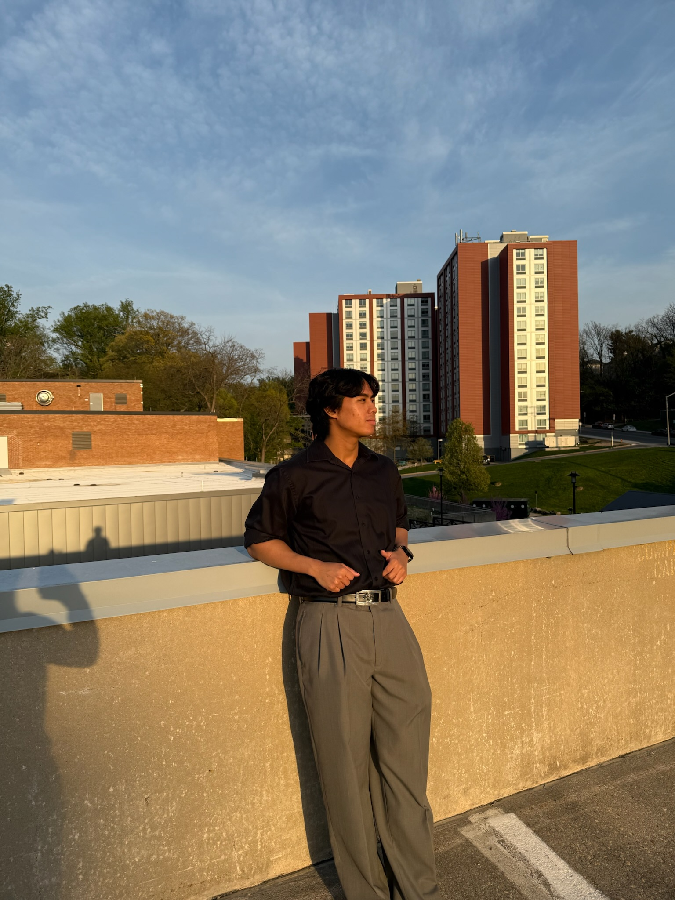
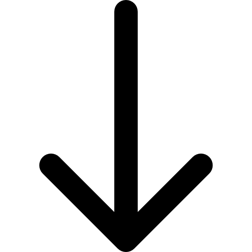
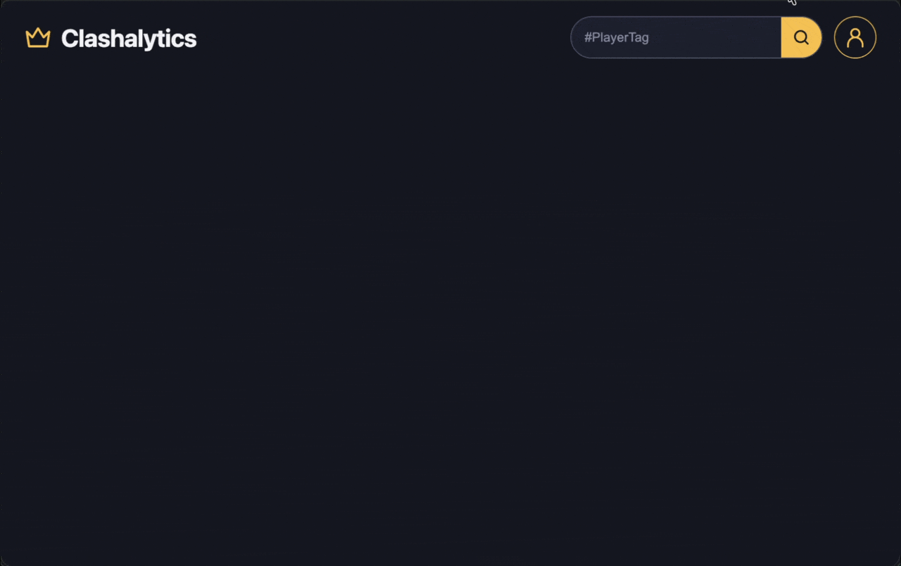
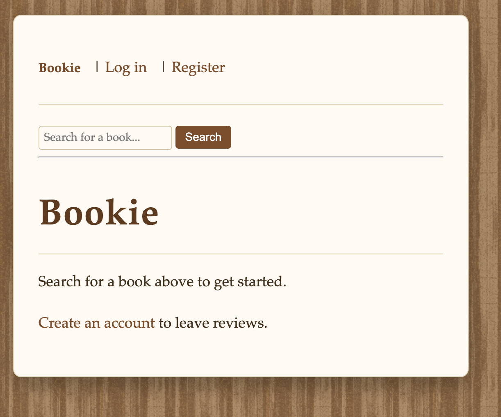
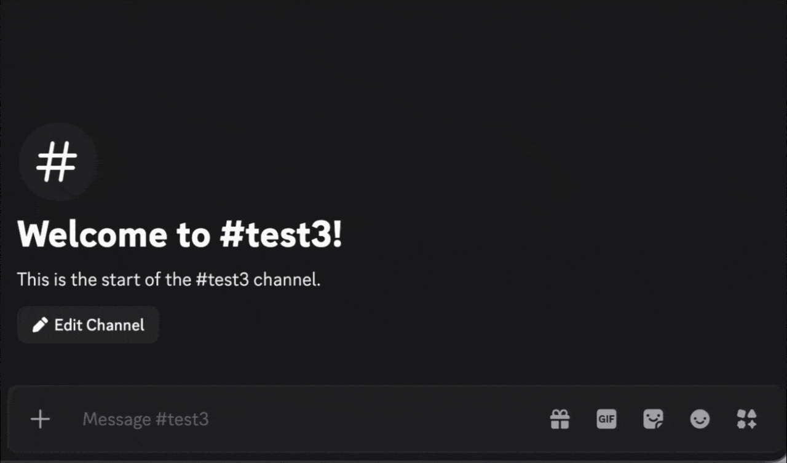

Hello, I'm
Collin Le
Software Engineering


Hello, I'm
Software Engineering
Get To Know More
Towson
Maryland
Towson University
I'm Collin Le, a Computer Science student at Towson University with a passion for building
software and bringing ideas to life.
My interest in development started with web development,
where I discovered how rewarding it is to turn an idea into something people can interact with
and use.
I enjoy working across the full stack, from designing user experiences and building interfaces
to developing backend systems, working with databases, and integrating APIs.
I'm particularly interested in creating applications that are both technically sound and
genuinely useful.
Whether I'm developing a full-stack application, experimenting with new technologies,
or exploring lower-level concepts like memory management and data structures in C,
I enjoy understanding how things work and finding ways to improve them.
I believe good software starts with the people who use it.
My goal is to keep growing as a developer by building meaningful projects,
challenging myself to learn new technologies, and collaborating with others.
I'm always looking for opportunities to learn from experienced developers,
contribute to a team, and turn ideas into something real.

Explore What I've Built

Developed a full-stack web application that allows Clash Royale players to retrieve player statistics and manage their profiles. Integrated an external REST API with a Spring Boot backend and implemented user authentication and persistent data storage.

Collaborated with a team of four using Agile development practices to build a book review application. Implemented user authentication, book ratings, and review submissions with database integration to support user-generated content.

Developed an AI-powered Discord chatbot using JavaScript, the Discord API, and Ollama. Implemented real-time mention-based interactions, conversational context handling, error recovery, and safeguards for Discord message limitations.
Developed a peer-to-peer terminal messaging application using TCP sockets.
Explored in-memory data storage and caching concepts.
iOS dating app being developed by a team of five.
Developed a command-line shell in C to explore process management, command execution, and low-level system programming.
Get in Touch